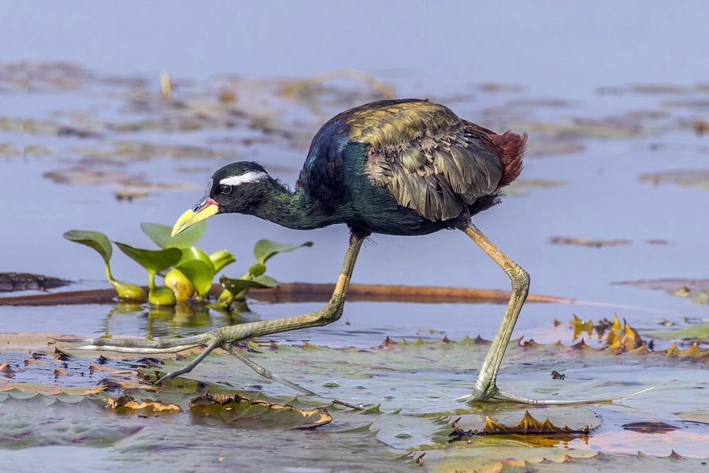

दल-पीपीBronze-winged Jacana
Metopidius indicus · Jacanidae · BRD-0040

- Scientific name
- Metopidius indicus (Latham, 1790)
- Family
- Jacanidae
- Hindi
- दल-पीपी
- Status here
- native
- IUCN
- LC
When to look कब देखें
Present all year.
दल-पीपी / Bronze-winged Jacana
Metopidius indicus (Latham, 1790) — Jacanidae
दल-पीपी (ब्रॉन्ज-विंग्ड जकाना) — पूर्वी उत्तर प्रदेश के पानी से भरे तालाबों, झीलों और दलदली क्षेत्रों में पाया जाने वाला एक मध्यम आकार का निवासी जलपक्षी है। इसे अक्सर "कमल-सवारी" (lily trotter) भी कहा जाता है, क्योंकि इसके पैरों की उँगलियाँ (toes) अत्यधिक लंबी और पतली होती हैं, जो इसके शरीर के भार को पानी में तैरते पत्तों (जैसे जलकुंभी और कमल) पर फैला देती हैं, जिससे यह बिना डूबे पानी की सतह पर दौड़ सकता है। इसकी मुख्य पहचान इसका गहरे कांस्य-हरे (bronze-green) रंग के पंख, चमकीला काला शरीर और आँख के ऊपर से निकलती हुई एक चौड़ी सफ़ेद पट्टी (white supercilium) है। इस प्रजाति में मादा पक्षी नर से काफी बड़ी होती है और एक से अधिक नरों के साथ संबंध बनाकर अंडे देती है (polyandry), जबकि अंडों को सेने और बच्चों की देखभाल करने का सारा काम केवल नर पक्षी ही करता है।
Quick Identification त्वरित पहचान
| Feature | Description |
|---|---|
| Size | Medium wader; male is smaller (26–28 cm), female is larger (29–31 cm) |
| Colouration | Glossy black head, neck, and breast; dark metallic bronze-green wings and back |
| Supercilium | A prominent, broad white stripe running from behind the eye down the neck |
| Toes | Extremely long, thin, spider-like toes and claws; longer than the foot itself |
| Rump & Tail | Chestnut-red or rufous-red rump and short tail |
| Bill & Shield | Greenish-yellow bill with a red base; a small yellow or red frontal shield on the forehead |
Field tip: Look on ponds covered in water hyacinth or lotus leaves. Watch for a black, rail-like bird with metallic bronze wings walking lightly over floating leaves. Its extraordinarily long toes and bold white stripe behind the eye make it unmistakable.
Morphology आकारिकी
Biometrics (typical measurements in the northern Indian plains showing reversed sexual dimorphism):
| Measurement | Range |
|---|---|
| Total length | Male: 260–280 mm; Female: 290–310 mm |
| Wing (flattened chord) | Male: 150–170 mm; Female: 170–190 mm |
| Tail | 40–55 mm |
| Tarsus | 68–78 mm |
| Bill (culmen from base) | 32–40 mm |
| Weight | Male: 150–180 g; Female: 280–360 g |
Plumage: The head, neck, throat, breast, and upper belly are deep, glossy jet-black. The back and wings (coverts and scapulars) are dark, metallic olive-bronze or greenish-bronze. A broad, pure white superciliary stripe starts from just above the eye and extends back to the upper nape. The rump, upper tail coverts, and tail are rich rufous-chestnut.
Bare parts: The bill is greenish-yellow, with the base of the upper mandible showing a bright red or pink shield that extends onto the forehead. The irises are dark brown. The long, slender legs and spider-like toes are dull greenish-grey.
Vocalisations
Bronze-winged Jacanas are vocal, especially during territory disputes.
- Advertising / Alarm Call: A harsh, wheezy piping or seeking call: seek-seek-seek, repeated when agitated.
- Contact Call: Short, metallic chirping notes: peep-peep, given while foraging in groups.
Ecological Role पारिस्थितिक भूमिका
Specialised floating-vegetation predator.
- Lily-pad insectivore: They forage exclusively on floating vegetation, consuming aquatic insects and larvae that are inaccessible to heavier waterbirds.
- Bioturbation agent: Their walking and scratching on floating leaves breaks up dense mats of invasive water hyacinth (Eichhornia crassipes), opening up small water channels.
- Reversed sex-role niche: The female defends a large territory containing 1 to 4 nesting males. This creates a unique territorial structure that limits breeding densities based on pond area.
Life Cycle / Phenology जीवन चक्र
- Breeding season: June to September, coinciding with the monsoon season when floating vegetation reaches peak density.
- Nesting: The male builds a small, flimsy platform of water weeds and leaf stalks.
- Nest site: Placed directly on large floating leaves, such as those of the [FLR-0005 Indian Lotus] or dense water hyacinth mats.
- Clutch size: 4 highly glossy, bronze-brown eggs covered in a dense network of black lines (resembling scribbles, which acts as camouflage against rotting vegetation).
- Incubation: 22–24 days, performed solely by the male.
- Fledging: The chicks are precocial and can walk and swim immediately after hatching. The male cares for them, occasionally carrying them under his wings during danger. Chicks fledge in 30–35 days.
Host Plants or Prey आहार
Primary food items:
- Insects: Aquatic beetles, water bugs, larvae of dragonflies (such as [INS-0002 Wandering Glider]), and flies.
- Mollusks: Small pond snails (such as [MOL-0003 Freshwater Pond Snail]).
- Vegetation: Seeds of aquatic plants, particularly lotus and water lilies, and tender shoots of water grasses.
Predators / Natural Enemies शत्रु
- Raptors: Marsh Harriers and Black Kites target adults and chicks on open pads.
- Reptiles: Large Checkered Keelbacks (Xenochrophis piscator) and monitor lizards swim through pads to raid nests.
- Fish: Large predatory snakeheads (Channa marulius) can pull swimming chicks underwater.
Agricultural / Human Relevance कृषि प्रासंगिकता
Bioindicator of healthy ponds. Because they rely on floating vegetation, they are highly sensitive to pond drainage, pesticide spraying, and manual clearing of floating weeds by farmers.
In Basti, they are generally left undisturbed, although their nesting success is threatened by livestock (buffaloes) trampling floating vegetation during pond bathing.
Expected Locally स्थानीय रूप से अपेक्षित
Not a field record. Written from published accounts for eastern Uttar Pradesh. No confirmed local sighting yet — if you have seen it, that is what the atlas needs.
अभी तक स्थानीय पुष्टि नहीं। यह विवरण प्रकाशित स्रोतों से है, किसी अवलोकन से नहीं।
A common resident on the larger perennial ponds (talab) of Basti district. They are regularly observed on water bodies covered with [FLR-0013 Water Hyacinth] and [FLR-0005 Indian Lotus]. Breeding females can be seen actively defending their territories against rivals, flying low over the water with loud screeches, while the smaller males remain hidden, incubating eggs on floating nests.
Distribution वितरण
Global range: Widespread across the Indian Subcontinent, Southern China, and Southeast Asia.
In India: Found throughout the plains near permanent water bodies.
In Uttar Pradesh: Common resident in all wetland-rich districts and river valleys.
In Basti district / eastern UP: Found on most village ponds that have stable, year-round floating vegetation.
Research Questions शोध प्रश्न
Anyone can investigate these | कोई भी इन प्रश्नों की जाँच कर सकता है
- How many seconds does a male Jacana carry its chicks under its wings when a predator appears? — Record and analyze parental care videos.
- What is the hatching success rate of nests built on water hyacinth mats vs. native lotus leaves? — Locate and monitor nests.
- How many males does a single female defend in a typical one-hectare Basti pond? — Map territories and count nesting pairs.
- Does the introduction of grass carp fish affect the abundance of jacanas by reducing floating weed cover? / क्या ग्रास कार्प मछली को तालाबों में डालने से तैरती हुई वनस्पतियों की कमी होती है और इसका दल-पीपी की संख्या पर क्या प्रभाव पड़ता है? — Compare ponds with and without grass carp.
- How do jacana chicks adapt their walking behavior to avoid sinking on thin decaying leaf pads? / दल-पीपी के बच्चे पतले सड़ते हुए पत्तों पर डूबने से बचने के लिए अपने चलने के तरीके को कैसे अनुकूलित करते हैं? — Analyze high-speed videos.
Similar Species मिलती-जुलती प्रजातियाँ
| Species | Key Difference | हिंदी |
|---|---|---|
| Pheasant-tailed Jacana (Hydrophasianus chirurgus) | Breeding plumage is white and chocolate-brown with a long tail; non-breeding is pale with a yellow necklace; prefers open water | पीउ — लंबी पूंछ, सफेद रंग की प्रधानता |
| [BRD-0039 White-breasted Waterhen] (Amaurornis phoenicurus) | Stark white face and breast; lacks long toes and white eye stripe; walks on muddy banks | डहुआ — सफेद छाती, सामान्य पैर, झाड़ियों में छिपना |
| [BRD-0004 Indian Pond Heron] (Ardeola grayii) | Uniformly buff-brown when perched; flashes white wings in flight; long neck and heavy yellow bill | बगुला — धूसर शरीर, उड़ते समय सफेद पंख |
Field rule: Glossy black body, bronze wings, a broad white stripe running behind the eye, and extremely long spider-like toes identify the Bronze-winged Jacana.
Taxonomy & Classification वर्गीकरण
Original description. John Latham described the Bronze-winged Jacana as Tringa indica in 1790 in his work Index Ornithologicus (Vol. 2, p. 765). The type locality was India. The genus name Metopidius was introduced by Wagler in 1832, derived from the Greek metopidios (on the forehead), referring to the frontal shield. The specific name indicus refers to India, the type locality.
Subspecies. Monotypic — no subspecies are currently recognised.
Family and order placement. Placed in the order Charadriiformes, family Jacanidae.
Phylogenetic notes. Metopidius is a monotypic genus, representing an evolutionary branch of jacanas endemic to the Oriental region, sister to the African genus Actophilornis.
IUCN status rationale. Listed as Least Concern (LC) due to its extremely large range, high local abundance, and stable global population, though local populations are vulnerable to wetland reclamation.
Photo Gallery फोटो गैलरी
References संदर्भ
- Latham, J. (1790). Index Ornithologicus, Sive Systema Ornithologiae. Vol. 2. London, p. 765. [original description]
- Ali, S. & Ripley, S. D. (1999). Handbook of the Birds of India and Pakistan. Vol. 2. Oxford University Press, New Delhi.
- Grimmett, R., Inskipp, C. & Inskipp, T. (2011). Birds of the Indian Subcontinent. 2nd ed. Christopher Helm, London.
- Butchart, S. H. M. (2000). Population structure and breeding system of the sex-role reversed Bronze-winged Jacana Metopidius indicus. Ibis, 142(1), 93-102.
- BirdLife International (2024). Metopidius indicus. IUCN Red List of Threatened Species. Ver. 2024.
- GBIF Occurrence Data — Metopidius indicus, Uttar Pradesh (2010–2025).
Source file: species/fauna/birds/bronze_winged_jacana.md